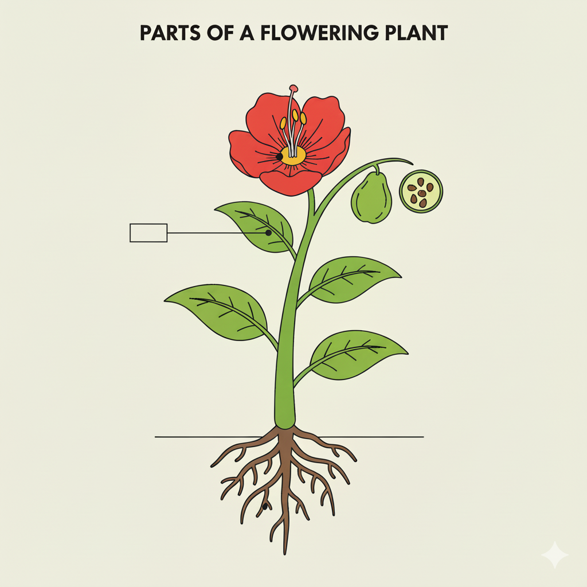
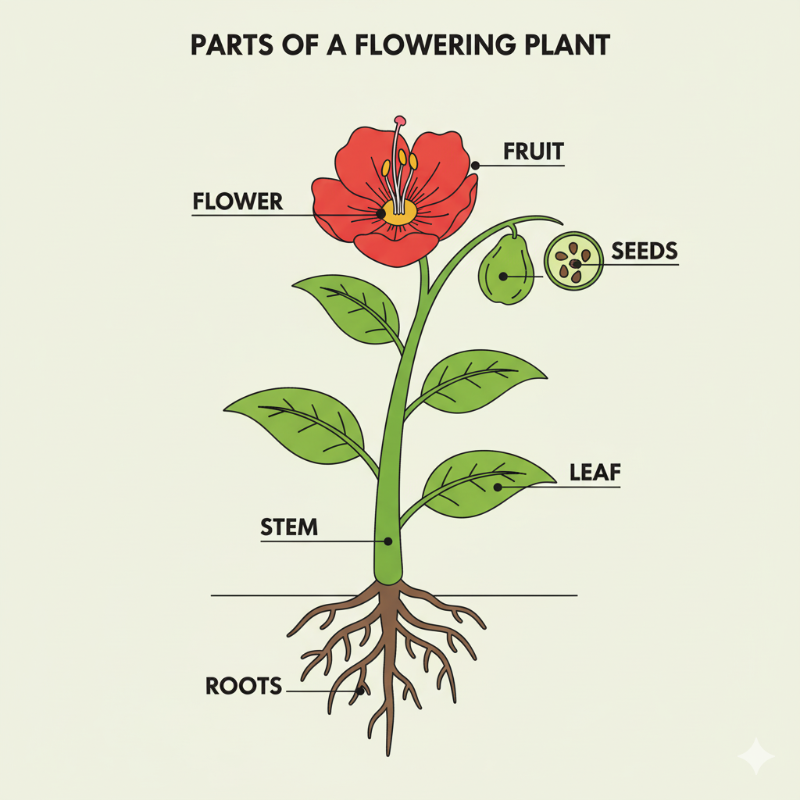
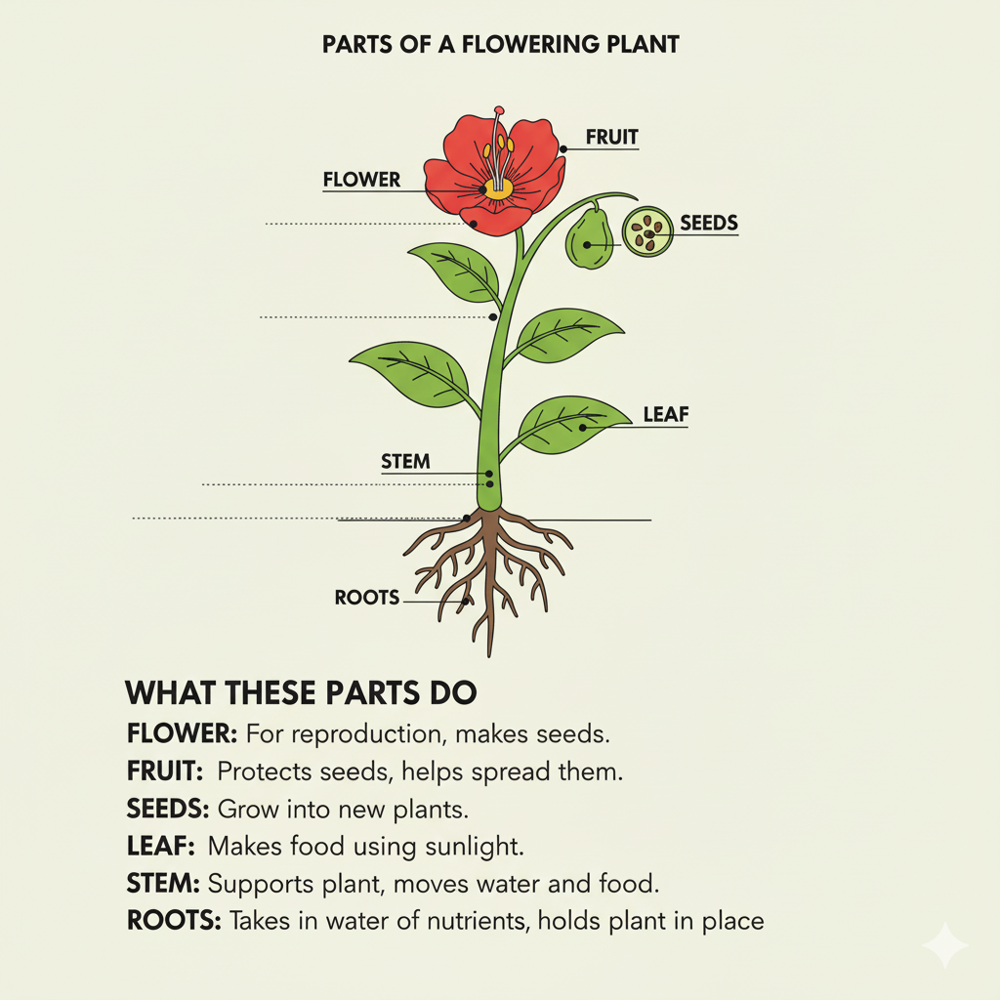

🧠 Quick Review: Animal Structures & Functions
Turn and talk: What body parts help animals survive, and what do those parts do?
- 🦉 Beaks & teeth — how do different shapes help with food?
- 🐟 Fins & tails — how do they help movement?
- 🐪 Fur, scales, blubber — what do they protect against?
- 🕷️ Camouflage — why does blending in matter?
🌱 Warm-Up: Label the Plant
Can you identify the missing parts?

🌿 Plants Have Five Main Parts
Roots · Stem · Leaves · Flower · Seeds

📘 What Do Plant Parts Do?

🎯 Learning Goals & Key Vocabulary
- Identify major plant parts and their functions
- Explain how plants grow and make food
- Use new science vocabulary accurately
Photosynthesis
How plants make food using sunlight, water, and air.
Chlorophyll
Green pigment in leaves that captures sunlight.
Roots
Anchor the plant and absorb water & minerals.
Stems
Hold the plant up; move water/food to all parts.
Leaves
Main site of photosynthesis (“food factory”).
Flower
Helps the plant reproduce; makes seeds/fruit.
Seeds
Tiny plant starters that can grow into new plants.
🌐 Digital Citizenship: Research Plants Safely
- 🌱 Use reliable plant databases (kid-friendly science sites).
- ✅ Cross-check facts in two places before using them.
- 👨👩👧 Ask an adult if something seems confusing or “off.”